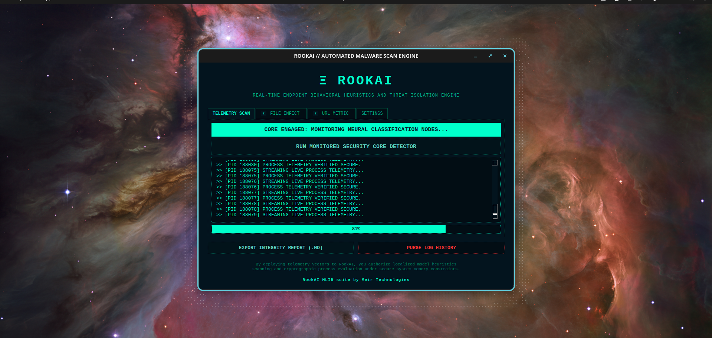
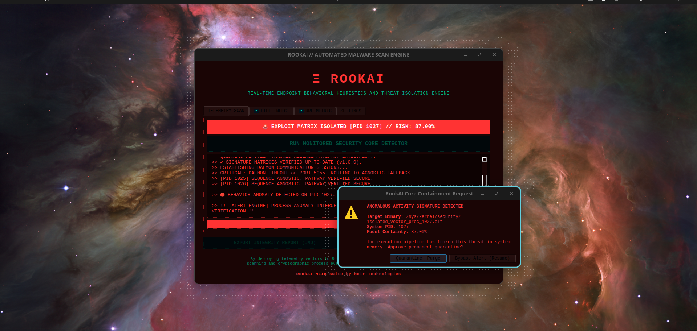

Real-Time Endpoint Behavioral Heuristics
An open-source, behavioral anti-virus and process telemetry analysis engine. RookAI monitors host execution layers, identifies multi-stage anomalies, and isolates threats with low-level kernel containment.
Heuristics Engine In Action
Observe real-time process monitoring and localized containment working alongside your running background inference daemon.


Process Telemetry Analysis
Monitors runtime signatures, process lifecycles, and anomalous memory hooks via high-performance pipelines.
Behavioral Anti-Virus
Moves past traditional static hashes. RookAI evaluates active system execution trees to catch novel zero-day mechanics.
Localized Inference Layer
Runs neural models locally inside a secure container footprint, preserving extreme privacy and host independence.
Turnkey Installation Track
Deploy the inference backend daemon and the PyQt6 frontend engine natively on your system.
# 1. Extract the release package package distribution
$ tar -xzvf rookai-linux-alpha.tar.gz
$ cd rookai-linux-alpha
# 2. Fire up the automated container and environment initialization script
$ chmod +x install.sh && ./install.sh
# 3. Launch the visual operational platform interface
$ rookai